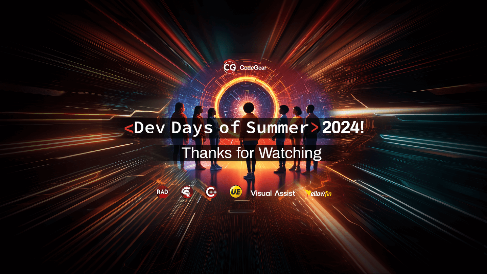

GDK Software
Jim McKeeth
Embarcadero Delphi MVP
Director of Consulting
jim@gdksoftware.com
gdksoftware.com
IMPLEMENTATION
FireDAC Database Access
●Universal data access components
○Same components for all DBs
●Platform independent
●TDataset descendent
●Data Aware, Live Binding, or GUI free
●Database specific features
Rank DBMS Score
1 Oracle 1258.48
2 MySQL 1026.86
3 Microsoft SQL Server 815.18
4 PostgreSQL 637.39
5 MongoDB 420.98
7 Snowflake 135.97
9 IBM Db2 123
10 SQLite 104.79
12 Microsoft Access 96.37
14 MariaDB 86.53
16 Microsoft Azure SQL Database 75.03
18 Google BigQuery 55.53
19 Apache Hive 55.24
20 FileMaker 46.67
22 SAP HANA 42.36
23 Teradata 42.25
25 SAP Adaptive Server 33.28
30 Firebird 19.97
Top Databases
●Top 30 DBMS ranked by db-
engines.com
●Remove "non-relational"
●Leave MongoDB
(most popular non-relational DB)
●Highlight native supported
●Full list:
docwiki/RADStudio/en/Databases_(FireDAC
)

BEGIN
FireDAC Components [Basics]
• TFDConnection: Connection to DB
• TFDTable: A single DB table
• TFDQuery: SQL statement, multiple tables, read and write
• TFDScript: Collection of scripts
• TFDGUIxWaitCursor: Wait cursor (VCL, FMX, Console)
• TFDGUIxLoginDialog: Control login dialog (VCL, FMX)
• TFDGUIxErrorDialog: FireDAC exceptions (VCL, FMX)
• TFDGUIxScriptDialog: Script progress (VCL, FMX, Console)
• TFDGUIxAsyncExecuteDialog: Query progress (VCL, FMX)
Database
Base
Management
System
Working with DBMS

Structured
Query
Language
Commonly used with DBMS
Universal with specific dialects
Working with SQL
Working with SQL
sqltutorial.org/sql-sample-database/
# Table Description Rows
1
employees
stores the data of employees.
40
2
jobs
stores the job data including job title
and salary range.
30
3
departments
table stores department data.
11
4
dependents
stores the employee’s dependents.
11
5
locations
stores the location of the
departments of the company.
7
6
countries
stores the data of countries where
the company is doing business.
25
7
regions
the data of regions such as Asia,
Europe, America, and the Middle East
and Africa. The countries are
grouped into regions.
4
Working with SQL
• Each record has an ID unique in that table
• Employees have 1 job, 1 department, and 0
to many dependents, stored in separate
tables
• They also have 1 manager, which is stored in
the employee table
• Departments have 1 location
• Locations have 1 country
• Countries have 1 region
sqltutorial.org/sql-sample-database/

● A very simple DBMS that exists as a library functioning as an
embedded DBMS. Works across most all platforms.
● Lacks some features common to other DBMS.
● Often enough for simple use cases.
○ docwiki/RADStudio/en/Using_SQLite_with_FireDAC ←
○ docwiki/RADStudio/en/Connect_to_SQLite_database_(FireDAC)
○ docwiki/RADStudio/en/Tutorial:_Connecting_to_a_SQLite_Database_Using_FireDAC
○ docwiki/RADStudio/en/Mobile_Tutorial:_Using_FireDAC_and_SQLite_(iOS_and_Android)
○ docwiki/RADStudio/en/SQLite_Database_Questions_(FireDAC)
SQLite
sqlite.org
SQLite with FireDAC
• DriverID: SQLite
• Database: path to db file
(defaults to creating if doesn't exist)
• For shared access
• JournalMode: WAL
• LockingMode: Normal
DBGrid Lookup
• Add a new field to the TFDQuery
• Give it a name and type
• Set Field Type as lookup
• Connect the local key field to the
key field of the other dataset
• Result field is displayed
Demonstration
Note on Containers
• Docker is the kleenex of container platforms
• Recently introduced new license restrictions
• Podman is a new alternative from RedHat
• Full compatibility and possibly more secure
• Open Container Initiative (OCI) compliant
• Full containers ecosystem
• Use with hub.docker.com, quay.io, or other registries
• Worth consideration!
github.com/containers/podman
podman.io
MySQL
• Midrange RDBMS
• local, embedded or remote
• Now owned by Oracle with 4 editions
• 1 free, and the other 3 paid
• Very difficult to get client libraries
• Current client only 64-bit
• Links: hub.docker.com/_/mysql
Supply: MYSQL_ROOT_PASSWORD
• docwiki/RADStudio/
• Connect_to_MySQL_Server_(FireDAC)
• MySQL_Server_Questions_(FireDAC)
MariaDB
• New open source (GPLv2) fork of MySQL
• Intended to maintain high compatibility
• Easy to get 32 or 64-bit client libraries
• Which are compatible with MySQL
• mariadb.com/kb/en/mariadb-connector-c/
• Refer to MySQL in DocWiki and FireDAC
• The FireDAC MySQL native driver supports:
• MySQL Server Community, Enterprise, and Embedded editions, from
version 3.21 up to version 8.0.23.
• MariaDB, from version 5.5 up to version 10.6.
• Recommend using MariaDB over MySQL
hub.docker.com/_/mariadb
MARIADB_ROOT_PASSWORD
Demonstration
FireDAC in Depth
• The definitive book about FireDAC
• by Spirit of Delphi winner Dr. Cary
Jensen
• jensendatasystems.com/firedacbook
• Learn how to connect to a wide variety of databases
• Optimize your connection configurations
• Explore the world of indexes, searches, and filters
• Discover the power of persisted datasets
• Create flexible queries using macros and FireDAC
scalar functions
• Achieve blazing performance with Array DML
• Master the art of cached updates
• Add sophisticated features using Local SQL
Resources
• FireDAC DocWiki:
• docwiki/RADStudio/en/Firedac
• docwiki/RADStudio/en/Overview_(FireDAC)
• docwiki/RADStudio/en/Getting_Started_(FireDAC)
• docwiki/RADStudio/en/FAQ_(FireDAC)
• SQL Reference
• SQLTutorial.org
• en.wikibooks.org/wiki/Structured_Query_Language
• w3schools.com/sql
• khanacademy.org/computing/computer-programming/sql
• codecademy.com/learn/learn-sql
See you tomorrow
FireDAC: Your Secret
Dataset Weapon
August 13, 1:00 PM (CST)
Slides and samples
github.com/jimmckeeth/FireDAC-Fundamentals
